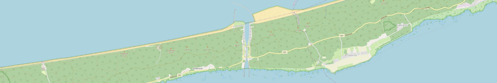

Statystyki rowu kaczyńskiego
Wykresy
Oficjalne dokumenty z Urzędu Morskiego w Gdyni
Pobierz dane
Przeprawy na południe w kierunku Zalewu Wiślanego
Duże przeprawy ogółem
215
Małe przeprawy ogółem
123
Koszt budowy przeprawy
2 000 000 000 zł
427 690 000 €
463 636 400 $
60 651 397 200 ¥

Przeprawy na północ w kierunku Zatoki Gdańskiej
Koszt budowy przeprawy
2 000 000 000 zł
427 690 000 €
463 636 400 $
60 651 397 200 ¥
Duże przeprawy ogółem
215
Małe przeprawy ogółem
123